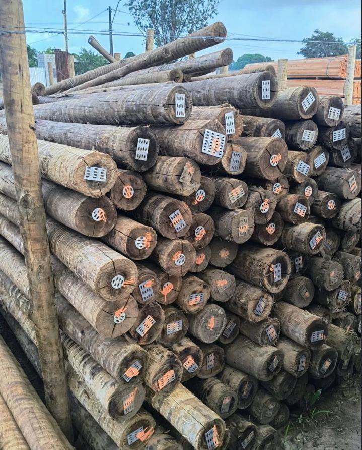
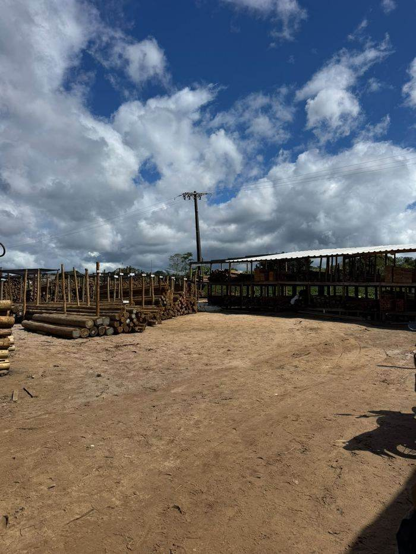

Postes, mourões e madeira tratada para cerca e plantação. Madeira serrada, tábua de pinus e telha pra sua obra e seu telhado. Tudo com bitola certa, no pátio, pronto pra levar.
Da lavoura de pimenta à obra na cidade, do curral ao telhado — cada linha pensada para o seu uso.

Bitolas variadas para cercas, curral, galpão e estrutura — separadas por diâmetro para facilitar sua escolha e seu orçamento.
💬 Perguntar no WhatsApp →Sustentação firme para o pé de pimenta, com qualidade garantida.
💬 Perguntar no WhatsApp →Tudo para fechar cercas e viveiros com resistência.

Barrote, ripa e peça serrada pra telhado, vigamento e forma — o esqueleto da sua obra, com a resistência que o eucalipto tratado dá.
💬 Perguntar no WhatsApp →Pra prateleira, forro, marcenaria e acabamento. Peça lisa, fácil de trabalhar, pronta pra sua obra ou seu móvel.
💬 Perguntar no WhatsApp →Fibrocimento, cumeeira e ferragem — leve a telha junto com a madeira serrada e feche o telhado numa parada só.
💬 Perguntar no WhatsApp →Estoque no pátio aqui em Una — sua obra ou plantação não para esperando material vir de fora da região.
Condições especiais pra fechar hoje — fale com a gente e garanta o seu preço.
Escolha a peça, veja a bitola de perto e leve com a certeza do que está comprando.
A gente ajuda a calcular a quantidade certa pra você não gastar mais do que precisa.
Rodovia BA-001, Estrada Una-Ilhéus, Km 01
Pedras de Una, Una – BA, 45690-000
Loja de referência em madeira tratada na região de Una, na Costa do Cacau — atendimento e material bem avaliados por quem já comprou.
⭐ Deixe sua avaliação →Manda a medida da sua obra, cerca ou plantação pelo WhatsApp — madeira, telha ou ferragem, a gente ajuda a fechar a quantidade certa, sem enrolação.